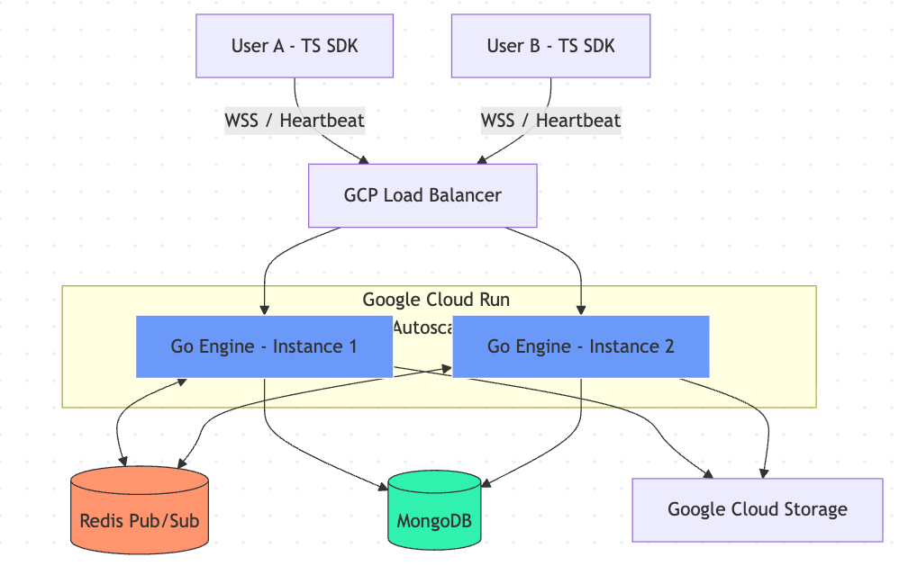

In 2023, our job platform hit a scaling bottleneck—not in performance, but in overhead. We were using Sendbird to power our messaging, and the bill had climbed to $1,250 per month.
The issue was their pricing model: charging per active connection. On a job platform, users stay logged in to browse listings, meaning they are "connected" even if they never send a message. We were effectively paying a success tax on our growing user base.
I led the transition to a custom-built chat engine to move from a per-user cost to a per-resource model.
The stack
The choices were driven by what our team already knew and what would scale predictably under a resource-based billing model.
-
Backend: Go using
gorilla/websocketfor the connection layer. - Pub/Sub: Redis for fan-out across horizontally scaled instances.
- Storage: MongoDB for message history and GCS for attachments.
- Infrastructure: Google Cloud Run behind a GCP Load Balancer.

Architecture diagram: Go WebSocket server → Redis Pub/Sub fan-out → MongoDB message store. Each Cloud Run instance subscribes to the relevant channel on connection and publishes outbound messages back through Redis.
Engineering for fast migration: the SDK
The biggest migration risk was the frontend. We had months of UI work built on top of Sendbird's SDK patterns. If we changed the interface, we would break everything.
To keep the migration safe, I modeled our custom TypeScript SDK after Sendbird's proven architecture. Since they had established the industry standard for chat UX patterns, following their interface let our frontend team migrate quickly without reinventing the wheel or touching existing UI components.
The SDK manages the message lifecycle: Pending, Succeeded, and Failed. This enables seamless optimistic UI updates, where the message appears instantly in the UI and gets corrected quietly in the background if anything goes wrong.
return groupChannel
?.sendUserMessage(textMessage.text, '')
.onPending((handler) => {
const temp = generateUserMessage(handler as UserMessage);
if (setState) setState({ type: MessageActionType.SET_NEW_MESSAGE, payload: [temp] });
})
.onSucceeded((handler) => {
const temp = generateUserMessage(handler as UserMessage);
if (setState) setState({ type: MessageActionType.EDIT_MESSAGE_LIST, payload: [temp] });
})
.onFailed((handler) => {
const temp = generateUserMessage(handler as UserMessage);
if (setState) setState({ type: MessageActionType.EDIT_MESSAGE_LIST, payload: [temp] });
})
.execute();In practice, it was not a perfect drop-in. Sendbird's SDK has years of edge cases baked in—connection retry logic, channel membership states, read receipts, and a handful of event hooks that our UI happened to rely on. We could not replicate all of that on day one.
The goal was never full parity. It was to minimize the surface area of change. By matching the core interface—the message lifecycle, the channel abstraction, the send method—we reduced the number of components that needed touching. Some still needed adjustment, but instead of rewriting the entire chat UI, we were fixing isolated spots. The volume of frontend work went from a potential full rewrite down to a focused set of changes.
Infrastructure challenges on Cloud Run
Deploying a real-time engine on serverless infrastructure requires solving problems that a typical request-response API never encounters.
Scaling across instances. Cloud Run scales horizontally, meaning two users in the same conversation might be connected to different instances. We used Redis Pub/Sub to bridge them. When a message arrives on instance A, it publishes to Redis. Instance B, where the recipient is connected, receives it and pushes it down the WebSocket.
Keeping connections alive. Cloud Run has a request timeout limit, and the GCP Load Balancer will terminate idle WebSocket connections after a period of inactivity. We maximized Cloud Run timeouts to 60 minutes and implemented a WebSocket heartbeat with ping/pong frames to prevent the load balancer from dropping idle but active connections.
Reducing database load on reconnect. Mobile users drop and reconnect constantly. A naive approach would re-fetch the entire message history on every reconnect. We implemented timestamp-based syncing instead. The SDK sends the timestamp of the last message it received, and the server returns only the delta. This significantly reduced MongoDB IOPS and bandwidth for reconnecting clients.
The impact
The cost improvement was immediate. Based on our May 2023 data after the migration:
- Redis: Rp675,358
- MongoDB: Rp1,319,731
- Cloud Run (allocated chat traffic): Rp1,485,091
- Total: Rp3,480,180 (~$233 USD)
We reduced our monthly spend from $1,250 to roughly $233. That is an 81% reduction, in the first month after going live.
What made that number even more interesting was the resource utilization at the time. Across Redis, MongoDB, and Cloud Run, we were sitting at roughly 5–20% utilization. We had not even begun to stress the system. The $233 was not a figure squeezed out of a maxed-out setup—it was the cost at a fraction of capacity.
That headroom matters. It means the infrastructure can absorb significant user growth before we need to think about scaling up or renegotiating anything. With Sendbird, every new connected user was a line item. With this setup, a surge in users barely moves the bill until we actually hit resource ceilings—which, at 5–20% utilization, are still a long way off.
The long-term case
The immediate savings were clear, but the longer argument for the migration was what happens over time. Sendbird's per-connection model means cost grows linearly with users. Every new user who logs into the platform to browse jobs adds to the bill, whether they send a message or not.
Our in-house model is resource-based. We pay for compute, storage, and data transfer—things that scale with actual usage, not just presence. As our user base has grown since 2023, the cost has scaled sub-linearly. New users browsing listings cost us almost nothing in the chat layer.
If we had stayed on Sendbird, our current user base would be costing the company an amount that would be difficult to justify. The engineering effort to build and maintain the in-house engine paid for itself within the first few months.
What I learned
Third-party services are a good default. They save time and reduce risk in the early stages. But pricing models matter as much as features. Sendbird was the right call when we were small. It became the wrong call the moment our growth pattern diverged from the model their pricing assumes.
Modeling the SDK after Sendbird's interface was the right call. It would have been tempting to redesign everything from scratch. We resisted that, and the migration was smooth because of it.
Serverless and WebSockets can coexist, but you have to design for it deliberately. Heartbeats, timeout limits, pub/sub bridging, and delta syncing are not optional features. They are the things that keep the system from quietly falling apart under real usage.